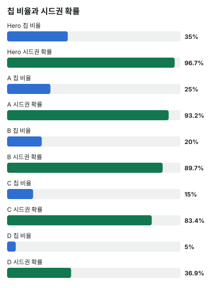

안녕하세요. E10에서 ICM으로 기대 상금을 손으로 구했죠. 칩이 늘어도 상금은 그만큼 늘지 않는다는 것도 봤고요.
오늘은 그 성질이 극단까지 가는 대회, 새틀라이트예요. 1등도 4등도 똑같이 시드권 한 장을 받는 구조에서, 칩이 가장 많은 Hero가 왜 가장 조심해야 하는지 숫자로 따라가 볼게요.
이 글에서 배울 것
- 시드권 N장을 "같은 상금 N개"로 놓고 ICM을 구하는 법, 그러면 기대 상금이 곧 시드권 받을 확률이 되는 이유
- 새틀라이트 버블에서 큰 스택의 콜 필요 승률이 일반 토너먼트보다 훨씬 높아지는 원리
- 그 높이를 정하는 게 "지면 어디로 떨어지나"라는 것
1단계. 새틀라이트를 ICM으로 보는 법
한 줄 정의
새틀라이트 = 상금 대신 다음 대회 시드권(참가권)을 나눠 주는 토너먼트예요. 오늘처럼 시드권이 4장이면 끝까지 남은 4명이 한 장씩 받아요. 1등이든 4등이든 받는 건 똑같은 한 장이에요.
버블은 한 명만 더 탈락하면 남은 사람이 모두 시드권을 받는 시점이에요. 5명이 남고 시드권이 4장이면 지금이 바로 버블이에요.
상금표로 바꾸기
시드권 4장은 상금표로 1등 1 · 2등 1 · 3등 1 · 4등 1 · 5등 0이에요. 이걸 E10의 ICM에 넣으면, 기대 상금이 곧 시드권을 받을 확률이 돼요. 상금이 1 아니면 0이니, 평균이 곧 확률인 거예요.
비유하면 의자 뺏기 놀이의 마지막 판이에요. 의자 4개에 사람이 5명이면 한 명만 빠지면 끝이에요. 이미 의자 바로 옆에 서 있는 사람은 굳이 남과 몸싸움할 이유가 없죠.
콜 필요 승률 식
콜하면 이기거나 지고, 폴드하면 지금 그대로예요. 이길 확률을 p라고 하면, 콜의 평균이 폴드와 같아지는 p가 본전이에요.
- p × 이김 + (1 − p) × 짐 = 폴드
- p × (이김 − 짐) = 폴드 − 짐
- p = (폴드 − 짐) ÷ (이김 − 짐)
세 값은 그 결과 뒤 Hero의 시드권 확률이에요. 일반 토너먼트라면 기대 상금을 넣으면 되고요.
2단계. 오늘의 조건 (고정)
5명 남음, 시드권 4장, 전체 칩 100BB. 블라인드 SB 0.5BB · BB 1BB, 앤티 없음. 아래 표는 블라인드를 내기 전 스택이에요.
| 선수 | 스택 | 시드권 받을 확률 |
|---|---|---|
| Hero | 35BB | 약 96.7% |
| A | 25BB | 약 93.2% |
| B | 20BB | 약 89.7% |
| C | 15BB | 약 83.4% |
| D | 5BB | 약 36.9% |

이게 무슨 뜻이냐면
Hero는 칩이 전체의 35%뿐인데, 시드권 확률은 약 96.7%로 이미 거의 확정이에요. C도 15BB로 Hero의 절반이 안 되지만 약 83.4%예요. D라는 짧은 스택이 아래에 있어서 모두가 그 덕을 봐요. 칩이 가장 적은 D가 가장 먼저 탈락할 가능성이 커서, 나머지 넷은 D가 떨어지기만 기다려도 시드권에 가까워지니까요.
이 표가 오늘 이야기의 바탕이에요. 위쪽 네 명은 이미 의자 근처에 있고, 칩을 더 모아도 올라갈 여지가 아주 작아요.
3단계. Hero(BB 35BB)가 B(SB 20BB)의 올인을 받으면
프리플랍
A·C·D 폴드 → B(SB) 20BB 올인 → Hero(BB)는 콜할까?
결론부터 말할게요. 이 조건에서 Hero는 승률이 약 76.7%를 넘어야 콜이 이득이에요. 칩 기준보다 약 29.2%p 높고, 아래 계산이 그 근거예요.
칩 기준
Hero는 1BB를 이미 냈으니 20 − 1 = 19BB를 더 내요. 콜하면 팟은 20 + 20 = 40BB예요.
칩 기준 필요 승률 = 19 ÷ 40 = 47.5%
시드권 기준 세 경우
- 폴드: Hero 35 − 1 = 34BB, B 20 + 1 = 21BB → 약 96.4%
- 이김: Hero 35 + 20 = 55BB, B 탈락 → 4명이 남아 시드권 확정(확률 1)
- 짐: Hero 35 − 20 = 15BB, B 20 + 20 = 40BB → 약 84.6%
ICM 필요 승률 = (0.96401(폴드) − 0.84567(짐)) ÷ (1(이김) − 0.84567(짐)) = 약 76.7%
감을 잡아 보면
76.7%가 얼마나 높은지 핸드 대 핸드로 볼게요. K♥K♦가 A♠Q♣를 상대하면 약 71.6%예요. AQ처럼 꽤 센 핸드를 만나면 KK조차 기준선에 못 미쳐요.
그래서 B의 올인이 AA~TT·AK·AQ 같은 센 핸드 위주라고 가정하면, 넘길 수 있는 건 AA·KK급 정도만 남아요. 반대로 B가 A2·A5 같은 약한 A나 22~66 같은 작은 페어까지 넓게 올인한다면, KK·QQ의 에퀴티는 그만큼 올라가 기준선을 넘을 수 있어요. B의 범위를 어떻게 보느냐가 콜 범위를 정해요.
왜 그럴까: 이겨도 얻는 게 없고, 지면 잃는 게 커요
따는 몫과 잃는 몫
- 이기면: 1 − 0.96401 = 약 0.036 늘어요
- 지면: 0.96401 − 0.84567 = 약 0.118 줄어요
잃는 몫이 따는 몫의 세 배가 넘어요. 칩으로는 19BB를 걸어 21BB를 따는 거의 대등한 내기인데, 시드권으로는 크게 기울어진 내기가 돼요.
같은 걸 다른 말로
잃는 몫 ÷ 따는 몫을 R이라고 하면, R = (폴드 − 짐) ÷ (이김 − 폴드)예요. 필요 승률 식은 R ÷ (1 + R)로도 쓸 수 있어요. 1 + R의 분모를 (이김 − 폴드)로 맞추면 (이김 − 짐)이 되니, (폴드 − 짐) ÷ (이김 − 짐)과 똑같은 식이에요. 오늘은 R이 약 3.29라서, 대략 4.29번 중 3.29번은 이겨야 본전인 셈이에요.
이김에 천장이 있어요
이기면 시드권 확률이 1이 되는데, Hero는 이미 0.96401이었어요. 올라갈 자리가 거의 없어요. 칩이 55BB가 되든 100BB가 되든 받는 건 한 장이니까요.
져도 살아남지만 아래로 내려가요
져도 Hero는 15BB로 살아남아요. 그래도 그 순간 Hero는 C와 같은 높이로 내려가, 40BB가 된 B와 25BB의 A 아래에 서요. 시드권 확률이 약 84.6%로 떨어지는 게 그 때문이에요.
일반 상금이었다면
같은 스택에 일반 상금(40 · 30 · 20 · 10 · 0, 합계 100점)이라면 Hero의 기대 상금은 폴드 약 27.60점, 이김 약 33.90점, 짐 약 18.98점이에요.
일반 상금 ICM 필요 승률 = (27.60125 − 18.97727) ÷ (33.89881 − 18.97727) = 약 57.8%
일반 토너먼트에서도 칩 기준보다 높아지긴 해요. 하지만 칩을 따면 1등 상금을 노릴 수 있어서 이김 쪽이 열려 있어요. 새틀라이트는 그 문이 닫혀 있어서 76.7%까지 올라가요.
자주 하는 실수
실수 1. "칩 리더니까 넓게 콜해서 압박해야지" 일반 토너먼트의 빅스택 감각이에요. 새틀라이트 버블에서 Hero는 이미 시드권 확률 약 96.7%라, 콜로 얻을 건 약 0.036뿐이고 잃을 건 약 0.118이에요. 칩 리더일수록 지킬 게 많고 얻을 게 적어요.
실수 2. "47.5%면 되니까 AK·작은 페어로 콜" 칩 기준 47.5%로 판단하면 오늘 기준선 76.7%와 약 29.2%p나 어긋나요. 새틀라이트 버블에서는 칩 기준 필요 승률을 그대로 쓰면 안 돼요.
실수 3. 일반 토너먼트의 ICM 숫자를 그대로 가져오기 같은 스택이라도 일반 상금이면 약 57.8%, 새틀라이트면 약 76.7%예요. 같은 판이 대회 구조 하나로 이만큼 달라지니, 계산 전에 상금표부터 확인해야 해요.
"칩이 제일 많은데 왜 피해요?"
좋은 질문이에요. 칩이 많다는 건 이미 시드권을 거의 쥐었다는 뜻이에요. 새틀라이트에서는 그 이상 칩을 모아도 받는 게 똑같아요.
그래서 큰 스택의 일은 더 따는 게 아니라 안 잃는 것이에요. 오늘처럼 남의 올인을 받는 쪽에 서면 76.7%가 필요하니, 받는 상황 자체가 Hero에게 불리하다는 것도 기억해 두세요.
숫자가 뒤집히는 지점
기준은 잃는 몫(폴드 − 짐)이 따는 몫(이김 − 폴드)에 비해 얼마나 큰지예요. 잃는 몫은 질 때 Hero 스택이 누구 아래로 떨어지느냐에 달려 있어요.
또 하나는 이기면 버블이 터지는지예요. 상대가 탈락해 바로 끝나는 콜은 이김이 확정(1)이라, 따는 몫 = 1 − 폴드할 때 확률이에요. 이미 확률이 높은 사람일수록 따는 몫이 작아요.
선생님의 한마디
새틀라이트 버블에서 올인을 받으면 이 순서로 봐요.
- 올인을 받으면 먼저 질 때 내 스택을 계산하고, 그게 누구 아래인지 보기
- 이기면 버블이 터지는 판인지 확인하기(터지면 이김 = 확정)
- 칩 기준 필요 승률은 참고만 하고, 새틀라이트 기준선으로 핸드를 고르기
연습 문제 (같은 5명)
문제 1. 오늘 스택 그대로(Hero 35 · A 25 · B 20 · C 15 · D 5)인데, 이번엔 C가 SB에서 15BB 올인하고 Hero(BB)가 받아요(다른 선수는 폴드). Hero의 시드권 확률은 폴드(Hero 34BB, C 15 + 1 = 16BB) 약 96.4%, 이김(C 탈락) 확정(1), 짐(Hero 35 − 15 = 20BB, C 30BB) 약 88.9%예요. 칩 기준 필요 승률과 ICM 필요 승률을 구하고, B의 올인을 받을 때(76.7%)와 왜 다른지 설명해 보세요.
정답 보기
칩 기준: 14 ÷ 30 = 약 46.7% (더 낼 칩 15 − 1, 콜한 뒤 팟 15 + 15) ICM: (0.96356 − 0.8892) ÷ (1 − 0.8892) = 약 67.1% B의 올인보다 내려가요. 져도 Hero가 20BB로 남아 A(25BB)·C(30BB) 아래지만 B(20BB)와 같은 높이에 서서, 잃는 몫이 0.96356 − 0.8892 = 약 0.074로 오늘 장면(약 0.118)보다 작기 때문이에요. 그래도 칩 기준보다는 약 20.4%p 높아요.
문제 2. Hero(BB 35BB)가 이번엔 D(SB 5BB)의 올인을 받아요(다른 선수는 폴드). 폴드(Hero 34BB, D 5 + 1 = 6BB) 약 95.93%, 이김(D 탈락) 확정(1), 짐(Hero 35 − 5 = 30BB, D 10BB) 약 92.6%예요. 칩 기준은 4 ÷ 10 = 40%예요. ICM 필요 승률을 구하고 칩 기준과 비교해 보세요.
정답 보기
(0.95930 − 0.92629) ÷ (1 − 0.92629) = 약 44.8%. 칩 기준 40%와 크게 다르지 않아요. 져도 30BB가 남아 여전히 위쪽에 있으니 잃는 몫이 작아요. 같은 Hero라도 누구의 올인이냐에 따라 기준선이 76.7%에서 44.8%까지 달라져요.
뚝섬 AOF 차트(새틀 프리플랍 차트)에서 그외 게임들 → 새틀(티켓) → 티켓 받는 인원 4 → 테이블 인원 5명 → 포지션 BB → 앞에서 액션한 자리 SB → 자리별 스택으로 맞추면 같은 방식(시드권 = 같은 상금)으로 계산해요. 화면은 블라인드 압박·실전 보정이 들어가 숫자가 오늘과 다를 수 있어요.
핵심 정리
- 새틀라이트는 시드권 N장을 같은 상금 N개로 놓으면 ICM 기대 상금 = 시드권 확률이에요
- 필요 승률 = (폴드 − 짐) ÷ (이김 − 짐) = R ÷ (1 + R), R = 잃는 몫 ÷ 따는 몫
- 상금이 평평할수록 이김의 천장이 낮아져 큰 스택의 필요 승률이 크게 올라가요
- 기준선은 상대가 누구냐, 지면 내가 어디로 떨어지냐에 따라 크게 달라져요
정리하며
오늘은 시드권 4장, 5명이 남은 새틀라이트 버블에서 칩 리더 Hero가 B의 20BB 올인을 받는 판을 봤어요.
칩으로는 47.5%면 되는 콜이 시드권으로는 약 76.7%가 필요했어요. 이겨도 이미 거의 쥔 시드권이 조금 확실해질 뿐이고, 지면 C와 같은 높이까지 내려가기 때문이에요. 같은 스택의 일반 토너먼트(약 57.8%)보다도 훨씬 높았죠.
다음 글 E18에서는 토너먼트를 떠나 헤즈업 프리플랍을 봐요. 둘만 남은 판에서 스택 깊이가 바뀌면 SB의 첫 행동이 어떻게 달라지는지 다뤄요.
AI 작성 · 숫자는 계산 검증 (ICM: 칩 비율로 등수를 차례로 뽑는 방식, 시드권 4장 = 같은 상금 4개 · 핸드 대 핸드 에퀴티는 프리플랍 계산) · 스택은 이 예시로 고정(전체 100BB) · 블라인드 압박·앤티는 넣지 않음 · 이번 한 번의 결정 기준